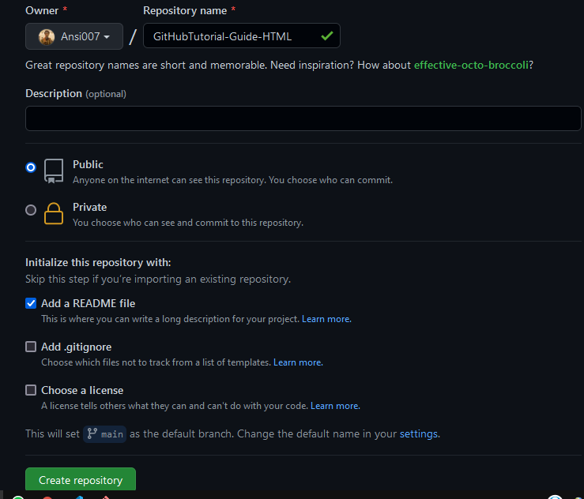
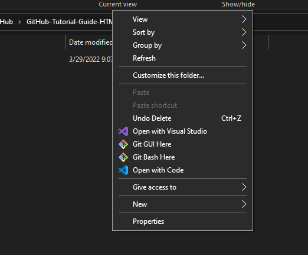
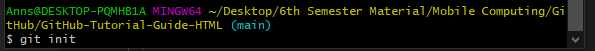
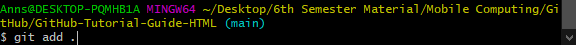
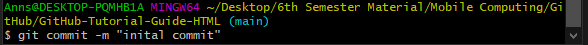
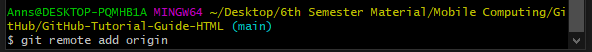
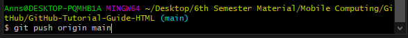
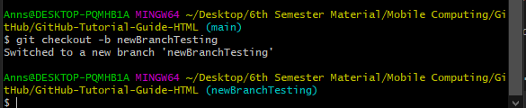
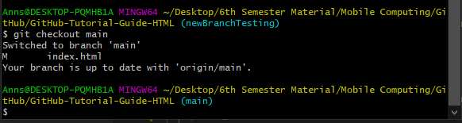
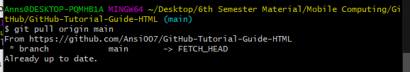

Git
What is Git? Git is a DevOps tool used for source code management. It is a free and open-source version control system used to handle small to very large projects efficiently. Git is used to tracking changes in the source code, enabling multiple developers to work together on non-linear development. Download Git from here. https://git-scm.com/downloads
GitHub
GitHub, Inc. is a provider of Internet hosting for software development and version control using Git. It offers the distributed version control and source code management functionality of Git, plus its own features.
Creating a repository
A repository is usually used to organize a single project. Repositories can contain folders and files, images, videos, spreadsheets, and data sets -- anything your project needs. Often, repositories include a README file, a file with information about your project. README files are written in the plain text Markdown language.
Your "your-repo-name" repository can be a place where you store ideas, resources, or even share and discuss things with others.
- In the upper-right corner of any page, use the drop-down menu, and select New repository.
- In the Repository name box, enter "your-repo-name".
- In the Description box, write a short description.
- Select Add a README file.
- Select whether your repository will be xPublic or Private.
- Click Create repository. 

Creating a local repository and linking it with the remote repo.
- Open a folder
- Right click on page and click on Git Bash Here 
- Run "Git init". Your local repositry is created. Now you may add any file. 
- Run "Git add .". This will add all files in your folder to your local repository. 
- Run "Git commit -m 'Initial commit'". This will add a commit to your local repository. 
- Run "Git remote add origin" 
- Run "Git push -u origin master" 
Creating a new branch.
Branching lets you have different versions of a repository at one time.
By default, your repository has one branch named main that is considered to be the definitive branch. You can create additional branches off of main in your repository. You can use branches to have different versions of a project at one time. This is helpful when you want to add new features to a project without changing the main source of code. The work done on different branches will not show up on the main branch until you merge it, which we will cover later in this guide. You can use branches to experiment and make edits before committing them to main.
When you create a branch off the main branch, you're making a copy, or snapshot, of main as it was at that point in time. If someone else made changes to the main branch while you were working on your branch, you could pull in those updates.
- Run "git checkout -b 'your-branch-name'" 
- To switch between branches run "git checkout 'branch-name'" 
Making and committing changes
When you created a new branch in the previous step, GitHub brought you to the code page for your new branch, which is a copy of main.
You can make and save changes to the files in your repository. On GitHub, saved changes are called commits. Each commit has an associated commit message, which is a description explaining why a particular change was made. Commit messages capture the history of your changes so that other contributors can understand what you’ve done and why.
- "Run "git add .". This will add all files in your folder to your local repository.
- "Run "git commit -m 'your-commit-message'". This will add a commit to your local repository.
- "Run "git push -u origin main"
How to pull changes
- Run "git pull origin 'your-branch-name'" 